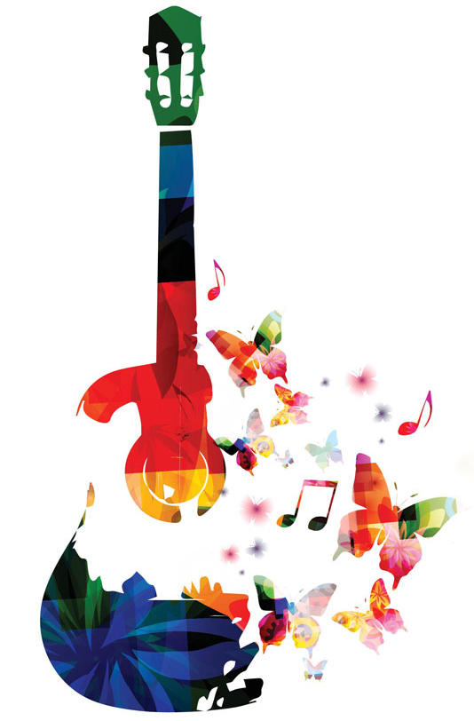
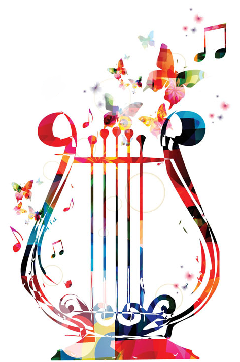
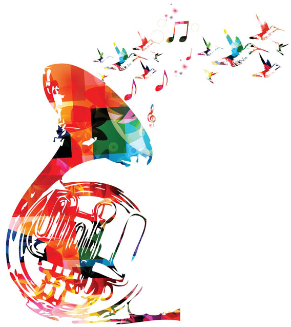

Наши направления

Рок
Как правило, инструментарий рока - электрический, однако это не является обязательным условием: рок может быть акустическим, синтезированным и даже чисто вокальным. Большинство существующих на данный момент музыкальных течений в основе своей имеют рок.

Традиционная музыка
Музыка, несущая в себе черты музыкальной традиции какого-либо этноса, что может выражаться как в исполнении традиционных народных песен, так и в использовании народных инструментов, элементов мелодики, композиционного построения, характерного для жанров музыкального фольклора того или иного народа.

Классика
Музыкальные произведения, отвечающие самым высоким художественным требованиям и сочетающие глубину, содержательность и совершенство формы. Классика не ограничена какими-либо временными рамками: к ней могут быть отнесены как произведения, созданные в далеком прошлом, так и современные сочинения.